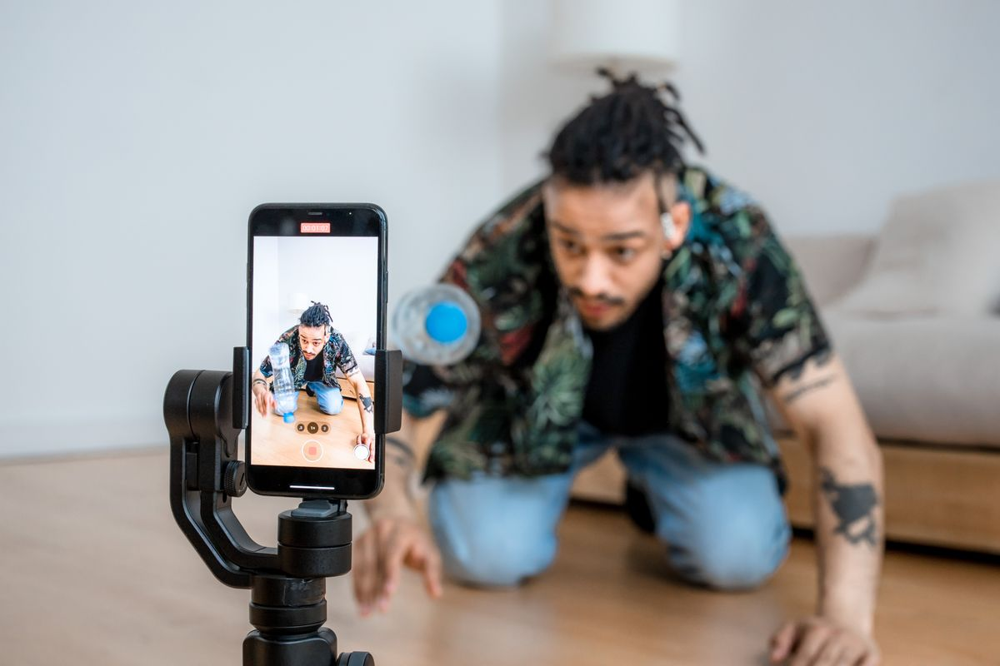
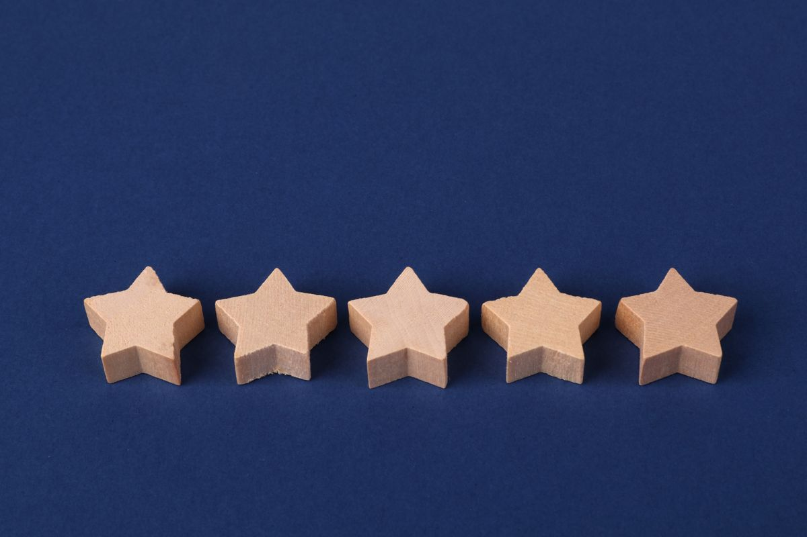

Wär's nicht fein, wenn Kund:innen nicht mehr zufällig vorbeischauen, sondern über einen klaren Weg zu dir finden? Genau das ist Online-Kundengewinnung: Du machst dich über Google, Social Media oder bezahlte Anzeigen dort sichtbar, wo Menschen ohnehin nach einer Lösung suchen, führst sie auf eine klare Website oder Landingpage und von dort zu einer Anfrage, einem Kauf oder einem Termin. Der Prozess läuft dabei immer in drei Schritten: Sichtbarkeit schaffen, Vertrauen aufbauen, zur Handlung führen. Ohne diese Reihenfolge bleibt jede Anzeige und jeder Post Zufall statt System.
Inhalt dieses Artikels
- Was ist Online-Kundengewinnung? Die Definition
- Die Website als Zentrale deiner Kundengewinnung
- SEO: online gefunden werden, ohne für jeden Klick zu zahlen
- Google Ads & bezahlte Kampagnen
- Social Media & Content-Marketing
- Bewertungen & Empfehlungen als Vertrauens-Hebel
- Von Website-Besuchern zu zahlenden Kund:innen
- Wie lange dauert Online-Kundengewinnung wirklich?
- Häufige Fehler bei der Kundengewinnung im Internet
- Häufige Fragen zur Online-Kundengewinnung
- Fazit
Was ist Online-Kundengewinnung? Die Definition
Online-Kundengewinnung bezeichnet alle Maßnahmen, mit denen du im Internet neue Kund:innen auf dich aufmerksam machst und sie zu einer Anfrage, einem Kauf oder einer Kontaktaufnahme führst. Der Unterschied zur klassischen Offline-Akquise (Kaltakquise, Printanzeigen, Messen) liegt vor allem darin, dass sich jeder Schritt messen lässt: wer deine Website besucht, wie lange, und ob daraus eine Anfrage wird.
Der Mechanismus dahinter ist derselbe wie bei einem klassischen Marketing-Funnel: Aufmerksamkeit, Interesse, Entscheidung. Nur dass online jede dieser Phasen ihren eigenen digitalen Kanal hat, statt sich auf ein Verkaufsgespräch oder eine Messehalle zu verlassen.
Ein Beispiel, wie das konkret aussieht: Jemand sucht bei Google nach "Website erstellen lassen", landet über eine Anzeige oder einen Blogartikel auf deiner Seite (Aufmerksamkeit), liest sich durch ein paar Referenzen und meldet sich für ein kostenloses Erstgespräch an (Interesse), und entscheidet sich nach dem Gespräch für dich statt für die Konkurrenz (Entscheidung). Drei Phasen, drei unterschiedliche Kanäle, ein durchgängiger Weg. Genau diesen Weg bewusst zu gestalten, statt ihn dem Zufall zu überlassen, ist der ganze Punkt.
Die Website als Zentrale deiner Kundengewinnung
Egal über welchen Kanal jemand auf dich aufmerksam wird, fast immer landet diese Person am Ende auf deiner Website. Sie ist die Zentrale, nicht Social Media und nicht Google Ads. Läuft sie langsam, ist sie am Handy kaputt oder fehlt ein klarer nächster Schritt, verpufft jede Anzeige und jeder Post davor.
Konkret heißt das: schnelle Ladezeiten, mobile Darstellung, die auch wirklich funktioniert, und ein Call-to-Action, der nicht erst nach fünf Scrolls auftaucht. Genau hier setzt Website-Perfektion bei uns an, bevor überhaupt eine Kampagne gestartet wird.
Drei Dinge, die auf jeder Zielseite stehen sollten, egal aus welchem Kanal der Besuch kommt:
- Ein klares Angebot in den ersten Sekunden. Was bekommt die Person, und für wen ist es gedacht? Wer das erst erraten muss, springt ab.
- Vertrauenssignale sichtbar platziert. Referenzen, Bewertungen, echte Namen und Gesichter statt anonymer Stockfotos.
- Ein einziger, eindeutiger nächster Schritt. Anfragen, anrufen oder Termin buchen, nicht drei gleichwertige Buttons nebeneinander.
SEO: online gefunden werden, ohne für jeden Klick zu zahlen
Suchmaschinenoptimierung ist der langfristig günstigste Kanal der Online-Kundengewinnung, weil du nicht für jeden Klick bezahlst, sobald eine Seite einmal gut rankt. Der Haken: Sie braucht Geduld. Erste Bewegung siehst du nach Wochen, wirklich spürbare Effekte meist erst nach Monaten.
Drei Bausteine zählen dabei am meisten: technisch saubere Seiten, die Google überhaupt richtig lesen kann, Inhalte, die echte Fragen deiner Zielgruppe beantworten statt nur Keywords aufzuzählen, und bei lokalen Betrieben ein vollständiges Google-Unternehmensprofil. Googles eigener SEO-Guide fasst die Basics gut zusammen, wenn du selbst tiefer einsteigen willst.
Local SEO für regionale Betriebe
Wer Kund:innen in einer bestimmten Stadt oder Region gewinnen will, sollte zuerst hier ansetzen, nicht bei überregionalem SEO. Ein vollständiges, aktuelles Google-Unternehmensprofil mit Öffnungszeiten, Fotos und Kategorie entscheidet oft mehr über die Sichtbarkeit im lokalen Suchergebnis als jede weitere Blogseite. Dazu ein einheitlicher Firmenname, Adresse und Telefonnummer über alle Verzeichnisse hinweg, sonst verwirrt das Google genauso wie potenzielle Kund:innen.
Google Ads & bezahlte Kampagnen: schnelle Sichtbarkeit kaufen
Wo SEO Geduld braucht, liefert Google Ads Tempo. Du zahlst pro Klick, dafür stehst du sofort ganz oben, sobald jemand aktiv nach deinem Angebot sucht. Das macht bezahlte Kampagnen besonders für den Start oder für saisonale Aktionen wertvoll, bei denen du nicht Monate auf organischen Traffic warten kannst.
Der Denkfehler, den viele machen: Kampagne starten, Budget verbrennen, nie in die Zahlen schauen. Wie viel ein Klick tatsächlich kostet, hängt stark von Branche und Konkurrenz ab, und genau deshalb lohnt sich laufende Auswertung mehr als das schönste Anzeigenmotiv.
Neben Google Ads funktionieren Meta-Kampagnen (Instagram, Facebook) nach demselben Grundprinzip, zielen aber eher auf Menschen, die noch gar nicht aktiv suchen, sondern über Interessen und Verhalten gefunden werden. Für erklärungsbedürftige Angebote lohnt sich oft die Kombination: Google Ads für Menschen mit konkretem Suchbedarf, Meta für den Aufbau von Aufmerksamkeit davor.
Social Media & Content-Marketing: der Vertrauens-Kanal
Social Media verkauft selten direkt beim ersten Kontakt. Was Instagram, LinkedIn und Co. wirklich gut können: Vertrauen aufbauen, bevor überhaupt eine Anfrage kommt. Ein Blog ist dabei eines der stärksten Werkzeuge, weil er die Fragen deiner Zielgruppe beantwortet und dich als Expert:in positioniert, ganz nebenbei nährt er auch die Leadgenerierung über organischen Traffic.
Welcher Kanal passt, hängt von der Zielgruppe ab, nicht vom Trend. B2B-Unternehmen gewinnen meist über LinkedIn und Fachartikel, B2C-Unternehmen eher über Instagram, TikTok oder lokale Facebook-Gruppen. Auf zu vielen Kanälen gleichzeitig präsent sein zu wollen, kübeln wir bewusst. Zwei bis drei Kanäle, die richtig bespielt werden, schlagen zehn halbherzige.
Inhalte, die dabei tatsächlich Vertrauen aufbauen, statt nur Reichweite zu jagen: Einblicke hinter die Kulissen, echte Kund:innenstimmen, kurze Erklärvideos zu häufigen Fragen und ehrliche Vorher-Nachher-Beispiele. Reine Produktwerbung ohne Kontext performt auf Social Media fast immer schlechter als Inhalte, die zuerst einen echten Nutzen liefern und das Angebot erst am Ende erwähnen.

Bewertungen & Empfehlungen als Vertrauens-Hebel
Bevor jemand anfragt, checkt er fast immer die Bewertungen. Laut der Local Consumer Review Survey von BrightLocal lesen die allermeisten Menschen vor einer Kaufentscheidung aktiv Online-Bewertungen. Fehlen sie oder sind sie alt, wirkt selbst die schönste Website unglaubwürdig.
Der einfachste Hebel dagegen: aktiv nach Bewertungen fragen, statt darauf zu hoffen, dass zufriedene Kund:innen von selbst daran denken. Ein kurzer Follow-up nach Projektabschluss bringt meist mehr als jede Erinnerungs-E-Mail Wochen später.
Genauso wichtig: auf negative Bewertungen ruhig und sachlich antworten, statt sie zu löschen oder zu ignorieren. Eine gute Reaktion auf Kritik wirkt auf zukünftige Kund:innen oft glaubwürdiger als eine makellose Fünf-Sterne-Liste ohne einen einzigen kritischen Kommentar.

Von Website-Besuchern zu zahlenden Kund:innen
Traffic allein bringt keinen Umsatz. Entscheidend ist, was mit den Besucher:innen passiert, nachdem sie gelandet sind. Eine Landingpage mit einem einzigen Ziel und einem kurzen Formular schlägt fast immer eine Seite mit fünf verschiedenen Zielen gleichzeitig. Jedes zusätzliche Formularfeld kostet Abschlüsse.
Genau in dieser Reihenfolge, erst Konzeption, dann Umsetzung, bauen wir Kampagnen im Rahmen von Umsatz-Wahnsinn: klären, wer die Zielgruppe wirklich ist und welchen Weg sie bis zur Anfrage geht, bevor überhaupt eine Anzeige geschaltet wird.
Das Beispiel von Marco Brunner (auxilio Assistenzsysteme) zeigt, wie viel allein diese Reihenfolge bringt: Die Zusammenarbeit begann nicht mit einer fertigen Landingpage, sondern mit einem Workshop, um die Zielgruppe und ihren Entscheidungsweg wirklich zu verstehen. Erst danach wurde konkret umgesetzt, nicht umgekehrt.
Wie lange dauert Online-Kundengewinnung wirklich?
Ohne Mist: Hier wird online am meisten Unsinn versprochen. Ehrlich aufgeschlüsselt nach Kanal sieht die Realität so aus:
- Google Ads & bezahlte Kampagnen: erste Anfragen oft innerhalb weniger Tage, sobald die Kampagne live ist.
- SEO & organischer Content: erste Bewegung nach vier bis acht Wochen, spürbare Effekte meist nach drei bis sechs Monaten.
- Social Media & Community-Aufbau: Vertrauen entsteht über Monate, nicht über einen einzelnen viralen Post.
- Bewertungen & Empfehlungen: wirken sofort, sobald sie da sind, brauchen aber Kund:innen, die schon bei dir gekauft haben.
Unsere langjährige Zusammenarbeit mit Horst Kriechbaum (Hausverkauf Klosterneuburg) zeigt genau das: Die stärksten Ergebnisse kommen nicht aus einer einzelnen Kampagne, sondern daraus, mehrere Kanäle über Zeit sauber ineinandergreifen zu lassen.
Häufige Fehler bei der Kundengewinnung im Internet
- ❌Auf allen Kanälen gleichzeitig starten, statt zwei bis drei wirklich durchzuziehen. Halbherzige Präsenz überall bringt weniger als volle Konzentration auf wenige Kanäle.
- ❌Eine Kampagne nach zwei Wochen ohne Ergebnis wieder abdrehen. Gerade SEO und Content-Marketing brauchen Monate, keine Tage.
- ❌Traffic auf eine Website ohne klaren nächsten Schritt schicken. Ohne CTA verpufft auch die beste Anzeige.
- ❌Bewertungen ignorieren, bis irgendwann eine schlechte Note ohne Kontext dasteht. Aktiv fragen schlägt passiv hoffen.
- ❌Kampagnen starten und nie wieder in die Zahlen schauen. Ohne Auswertung bleibt jede Optimierung Bauchgefühl statt Fakten.
Häufige Fragen zur Online-Kundengewinnung
Was kostet Online-Kundengewinnung?
Das hängt stark vom Kanal ab. SEO und organischer Content kosten vor allem Zeit statt laufendes Werbebudget, brauchen dafür aber Monate, bis sie wirken. Google Ads oder Meta-Kampagnen kosten von Anfang an Budget pro Klick, liefern dafür aber schon in den ersten Tagen Ergebnisse. Realistisch kalkulierst du Budget für Konzeption, Umsetzung und laufende Kampagnen getrennt.
Wie lange dauert es, bis online neue Kund:innen kommen?
Bei bezahlten Kampagnen siehst du erste Anfragen oft schon nach wenigen Tagen. Bei SEO und organischem Content rechnest du realistisch mit drei bis sechs Monaten, bis spürbar Traffic und Anfragen ankommen. Am schnellsten funktioniert meist die Kombination: bezahlte Kampagnen für sofortige Ergebnisse, SEO und Content für nachhaltiges Wachstum danach.
Welche Kanäle funktionieren am besten für die Kundengewinnung im Internet?
Es gibt keinen universell besten Kanal, nur den, der zu deiner Zielgruppe passt. B2B-Unternehmen gewinnen oft über LinkedIn, Fachartikel und Google Ads. B2C-Unternehmen oft über Instagram, lokale Google-Sichtbarkeit und Empfehlungen. Zwei bis drei Kanäle, die richtig bespielt werden, schlagen fast immer zehn Kanäle halbherzig.
Brauche ich für Online-Kundengewinnung eine Agentur?
Nein, zwingend nicht. Mit Zeit, Geduld und der Bereitschaft, sich in SEO, Content und Kampagnen einzuarbeiten, lässt sich vieles selbst umsetzen. Eine Agentur wird vor allem dann sinnvoll, wenn Tempo zählt, die Konzeption komplex ist oder schlicht die Zeit fehlt, sich nebenbei in jeden Kanal einzuarbeiten.
Was ist der Unterschied zwischen SEO und Google Ads bei der Kundengewinnung?
Google Ads kauft dir sofortige Sichtbarkeit, die endet, sobald das Budget aufgebraucht ist. SEO baut langfristige, organische Sichtbarkeit auf, die weiterläuft, auch wenn du gerade keine Kampagne fährst, kostet dafür aber deutlich mehr Zeit bis zur Wirkung. In der Praxis ergänzen sich beide am besten, statt sich gegenseitig zu ersetzen.
Funktioniert Online-Kundengewinnung auch ohne großes Budget?
Ja, aber nicht ohne Aufwand. Ohne Werbebudget verschiebt sich der Preis von Geld zu Zeit: SEO, Content-Marketing, Community-Aufbau auf Social Media und aktives Sammeln von Bewertungen kosten kaum laufendes Budget, dafür konsequente Arbeit über Monate. Der Fehler, den viele machen: alles gleichzeitig anfangen und nach vier Wochen wieder aufgeben, statt einen Kanal wirklich durchzuziehen.
Fazit: Online-Kundengewinnung ist ein System, kein Zufallstreffer
Online-Kundengewinnung funktioniert nicht über einen einzelnen genialen Post oder eine einmalige Anzeige, sondern über das Zusammenspiel aus Sichtbarkeit, Vertrauen und einem klaren Weg zur Handlung. Wer diese drei Bausteine sauber aufeinander abstimmt, statt sie einzeln und planlos zu bespielen, macht aus Fremden planbar Kund:innen. Der einzige Maßstab, der zählt: Gewinnst du dadurch neue Kund:innen? Alles andere ist zweitrangig.
Fang mit einem Kanal an, den deine Zielgruppe wirklich nutzt, miss, was passiert, und bau erst dann den nächsten dazu. Groß denken darfst du dabei trotzdem, nur eben Schritt für Schritt.